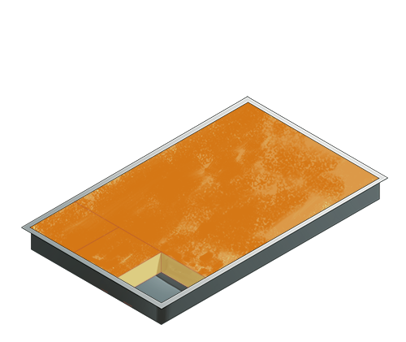

Butter Mochi
Adapted from my aunt
Note: I halved the original recipe, which made a whole baking sheet and used 5 eggs.
Adapted from my aunt
Note: I halved the original recipe, which made a whole baking sheet and used 5 eggs.
-Ingredients-
- 1/2 box mochiko rice flour
- 1 1/2 tsp baking powder
- 3/8 stick of butter at room temperature
- 1 cup milk
- 1/2 can coconut milk
- 2 eggs
- 1/2 tsp vanilla (or one package vanilla sugar)
- 1 cup sugar
- Preheat the oven to 350°.
- Beat butter and sugar together, then add eggs one by one, then add the rest of the wet ingredients and combine.
- Add dry ingredients and mix together.
- Grease a pie form and fill with batter. Bake for ≈ 40-50min or until golden-brown on top and set. Cool before enjoying. Itadakimasu!